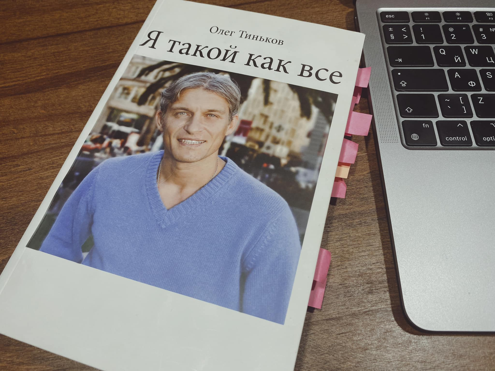

В этом году решил больше читать. Конкретно — 52 книги за год, что примерно на 51 книгу больше, чем в среднем за предыдущие лет 20.
Не бог весть какое оригинальное желание, не более оригинальна и цель.
Первые 5 книг уже прочитаны, может дело и сложится.
Отзывы на книги никогда не были моим жанром, тем интересней его попробовать.
Итак, Олег Тиньков, «Я такой как все»
Олег Тиньков, безусловно, один из самых ярких бизнесменов современной России. У нас не принято восхищаться живыми бизнесменами, поэтому многие его по привычке недолюбливают.
У Тинькова в рукаве есть козыри, он:
- действительно добился всего сам, без родителей и залоговых аукционов,
- родом из деревни.
Казалось бы, чем не пример для подражания? Но Тиньков богат, а миллиардера в России могут полюбить только за то, что он раздал деньги бедным. Причём не разбросал из окна как Дуров, а сам попросил их у него взять. Желательно анонимно.
Книга вряд ли сделает из каждого читателя успешного бизнесмена. Но написана достаточно откровенно, а читатель, родившийся в 70-80-х встретит в ней много знакомой фактуры.
Для тех, кто ищет продолжения книги, рекомендую фильм Андрея Лошака.